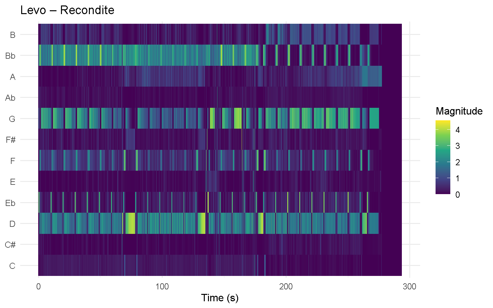

Is there a relationship between tempo and danceability in both genres between Italo disco (1979–1986) and Berlin minimal techno (2000–2024). Both genres tempo ranges are 115–130 BPM and are associated with dancing. Italo disco is known for synthesizer melodies, harmony and nostalgia. Berlin minimal techno has a reputation of repetition and rhythmic stability. The visualization shows danceability peaks within a mid-tempo range, especially in Berlin minimal techno. Since Spotify’s danceability metric already includes tempo as an element, this shows how much of the danceability score can be attributed to tempo alone. Any other variation stem from rhythmic factors such as beat strength or overall regularity.
This first comparison between the two corpora focuses on tempo (BPM) and danceability. The dataset consists of two curated playlists with 22 songs in both the Italo Disco and the Berlin Minimal Techno playlist. These playlists were selected to compare two electronically produced dance genres with different historical and stylistic characteristics. The track-level audio features were obtained from Spotify and combined into a single dataset.
Rather than assuming that tempo directly determines danceability, this analysis asks whether the two genres differ in how tempo and danceability are distributed and related. Though it should still not be interpreted as evidence of causation.
# A tibble: 2 × 2
genre n
<chr> <int>
1 Berlin Minimal Techno 22
2 Italo Disco 22# A tibble: 2 × 3
genre n_tracks correlation
<chr> <int> <dbl>
1 Berlin Minimal Techno 22 0.0565
2 Italo Disco 22 -0.454 
The plot shows that both genres occupy tempo ranges typical of dance music, but the relationship between tempo and danceability differs in strength and direction across the two corpora. The regression lines provide a useful summary of the overall pattern, while the confidence bands show that the relationship remains somewhat uncertain.
This means that tempo may contribute to danceability, but it is unlikely to explain it on its own. Danceability is probably shaped by a combination of factors, including rhythmic regularity, timbral consistency, energy, and structural design. For that reason, the following sections move beyond track-level features to examine pitch organisation, timbre, loudness, and rhythm in more detail.
To compare the harmonic structure of the two genres, chromagrams were generated for one representative track from each playlist: Two of Hearts (Italo Disco) and Levo (Berlin Minimal Techno).
Chroma features represent the intensity of each pitch class (C, C#, D, etc.) over time, independent of octave. They were extracted in Sonic Visualiser and exported as CSV files, where each row corresponds to a time frame and each column to a pitch class.


The chromagrams show a clear difference in harmonic structure between the two genres.
Two of Hearts exhibits multiple pitch classes being active at the same time, forming repeating vertical patterns. These patterns reflect chord-based harmony and periodic harmonic cycles, which are characteristic of Italo Disco. The repetition of these multi-pitch structures suggests a stable tonal framework built around recurring chord progressions.
In contrast, Levo shows fewer simultaneously active pitch classes, often sustained over longer time spans. This creates a more horizontally continuous pattern, reflecting harmonic stasis: the prolonged use of a limited set of pitches with gradual variation over time. This aligns with the aesthetic of Berlin Minimal Techno, where subtle change and timbral evolution are often more important than rapid harmonic movement.
Additionally, changes in intensity indicate shifts in emphasis rather than large harmonic changes. For example, some pitch classes become more prominent in later sections of Levo, suggesting structural development through dynamic emphasis rather than through a new chord cycle.
These observations suggest that while both tracks are dance-oriented, they differ fundamentally in how pitch is organised: Italo Disco relies more on repeating harmonic cycles, whereas Minimal Techno emphasises sustained tonal centres and gradual transformation.
Put your MFCC / timbre analysis here.
Put loudness analysis here.
Put week 11 here.
Put week 12 here.